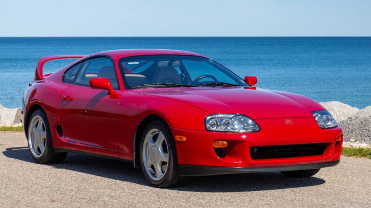

toyota-supra
Toyota Supra — серийный спортивный автомобиль, выпускающийся компанией Toyota с 1978 года. Дизайн Supra был перенят от Toyota Celica, но кузов стал длиннее и шире[6]. Начиная с середины 1986 года, Supra отделилась от Celica, став самостоятельной моделью. В связи с этим Toyota перестала использовать префикс Celica, и автомобиль стал именоваться просто Supra[7]. Первое, второе и третье поколения Supra собирались на заводе в Тахаре, а четвёртое и пятое поколение — на заводе в городе Тоёта в Японии.
тойота супра стала популярною після фільму форсаж де головний герой мав цю машину